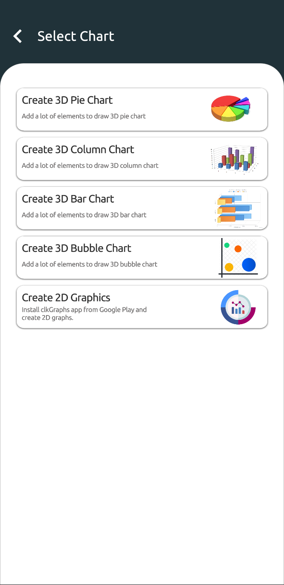
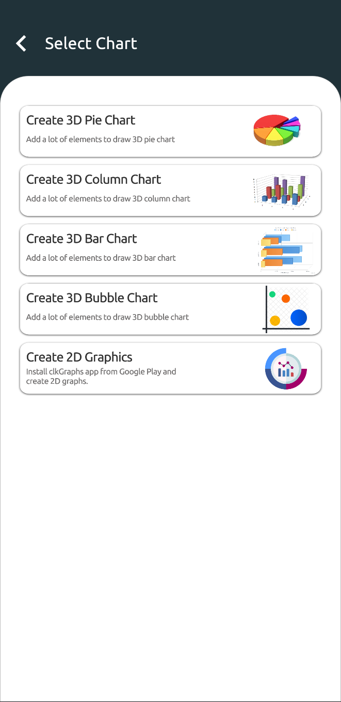

Gráfico de pizza
Vamos imaginar que você escolheu o gráfico de pizza na tela que se abre e criará um gráfico de pizza com os dados que possui.
A página será aberta primeiro com a janela adicionar elemento. Depois de inserir o valor e clicar no botão "Salvar", você verá
a primeira versão do gráfico de pizza conforme mostrado abaixo.

Como um único elemento foi adicionado ao gráfico neste momento, é normal ver um gráfico de pizza inteiro em uma cor na área do meio.
Se você clicar no elemento "Novo Item" mostrado com "1" na figura abaixo, poderá ver a cor, o nome e o valor do elemento atual.
Você pode alterar suas propriedades. Se você deseja adicionar um novo elemento ao seu gráfico, pode usar o botão adicionar elemento indicado por "4".
Você pode dar um novo nome a este desenho clicando na parte indicada pelo "3" na parte superior da tela.
Você pode definir o tamanho do rótulo no gráfico e adicionar o gráfico a um grupo de slides usando "Configurações"
botão com indicado por "2".

Janela de configurações
A página abaixo abre com o botão "Configurações" localizado no ponto dois. A barra deslizante indicada pelo número "1" nesta página
Define o tamanho da tag de nome ao lado do gráfico de pizza. No ponto "2" você pode inserir um nome de grupo para o seu trabalho e
você pode incluir seu gráfico nesse grupo pressionando o símbolo (+) na lateral. Usando a lista suspensa "3" em vez de criar um novo grupo
você pode escolher um dos grupos disponíveis.
Então, o que esses grupos fazem? Vamos falar sobre isso agora.

Grupos de apresentação
Na imagem abaixo, você pode ver os botões "1", "2", "3" no canto superior direito. Depois de inserir todos os seus valores, você pode salvar seu gráfico
com o uso do botão salvar indicado por "3". O botão número "2" é o botão de captura de tela. Quando você insere seus valores e tem seu gráfico pronto
você pode fazer sua apresentação a partir desta página ou adicionar esta imagem como uma página a um grupo de slides que você criou na página "Configurações".
Dessa forma, você pode fazer apresentações uma após a outra adicionando diferentes tipos de gráficos ao mesmo grupo de slides.
O botão "1" abre o grupo de slides ao qual o gráfico está anexado.

Um grupo de apresentação é exatamente o que parece abaixo. O grupo de slides chamado "Minhas apresentações" aparece na tela.
Capturas de tela de diferentes gráficos são organizadas horizontalmente infinitamente. Você pode ver outras fotos rolando a lista horizontalmente,
você pode visualizá-los como uma página inteira clicando neles. Desta forma, você pode criar diferentes tipos de gráficos para um projeto, um após o outro e
você pode fazer uma apresentação. Você pode reordenar as fotos com o botão "Editar" no canto superior direito.

Você pode excluir a imagem selecionada do grupo de slides atual com a ajuda do botão "Excluir", como visto no canto superior direito abaixo em imagens em tela cheia.

Variáveis
Em um gráfico de pizza, os elementos têm apenas uma variável e essa variável é o valor do elemento. Mas para outros tipos de gráfico (Barra, Coluna, Bolha)
elementos podem ter múltiplas variáveis. Para aumentar o número de variáveis em seu gráfico, clique no botão (+) mostrado na figura abaixo.

Você verá esta tela onde as variáveis são adicionadas, editadas ou excluídas. Aqui você pode dar novos nomes às variáveis existentes. Você pode excluir variáveis ou criar uma nova.
Quando você faz uma alteração em uma variável ou adiciona uma nova variável, essa alteração será refletida imediatamente nos outros elementos do gráfico.
Depois de inserir o valor da variável recém-adicionada para todos os elementos, você pode salvar seu gráfico.

Como você pode ver as variáveis dos elementos são exibidas no gráfico. Você pode alterar se deseja mostrar as linhas e informações do eixo na tela de configurações.
Além disso, você pode visualizar o gráfico de diferentes ângulos com os botões da câmera no lado esquerdo da tela e fazer várias capturas de tela
de diferentes ângulos em gráficos lotados.

Nos gráficos de barras, colunas e bolhas, você pode clicar nos modelos de diagrama para ocultar ou tornar visível o rótulo de informações acima do modelo.


 
